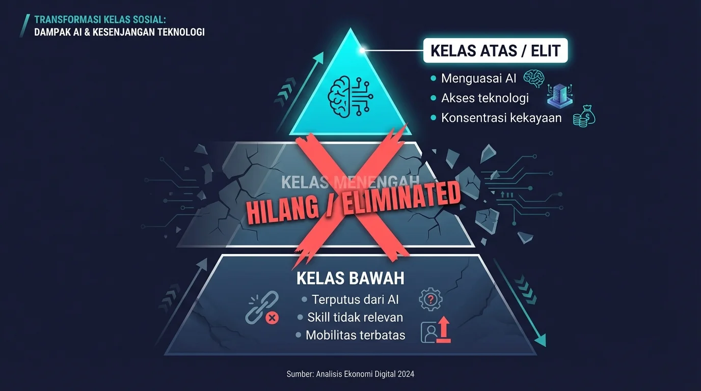

Memahami AI dan Revolusi Industri 4.0
Apa itu Artificial Intelligence?
Artificial Intelligence (AI) adalah cabang ilmu komputer yang bertujuan menciptakan sistem yang mampu melakukan tugas-tugas yang biasanya memerlukan kecerdasan manusia.
Tugas tersebut meliputi: pengenalan pola, pengambilan keputusan, pemahaman bahasa, dan pemecahan masalah kompleks.
Sejarah Perkembangan AI
Akselerasi Eksponensial
Perkembangan AI dalam 5 tahun terakhir melampaui kemajuan 50 tahun sebelumnya.
Kondisi AI Saat Ini
Kapabilitas AI Hari Ini
Sudah Mampu:
- Menulis artikel, laporan, dan kode program
- Analisis data kompleks
- Desain visual dan kreatif
- Layanan pelanggan 24/7
- Review dokumen legal
- Diagnosis medis dasar
Dalam Pengembangan:
- Penelitian ilmiah otonom
- Manajemen proyek end-to-end
- Strategi bisnis
- Diagnosis kesehatan
- Robotika presisi tinggi
Data Global
(Goldman Sachs, 2023)
(World Economic Forum)
Kondisi Indonesia
- Sekitar 60% pekerja berada di sektor informal
- Tingkat literasi digital masih relatif rendah
- Infrastruktur teknologi tidak merata antar daerah
- Regulasi AI belum komprehensif
- Ketergantungan pada teknologi impor
Indonesia lebih rentan dibanding negara maju dalam menghadapi disrupsi AI.
Problematika: Dampak Sosial & Ekonomi
Asumsi yang Keliru
Banyak yang berasumsi bahwa AI dan robot akan menggantikan pekerja kasar atau buruh pabrik terlebih dahulu.
Kenyataannya justru sebaliknya.
Pekerja Kerah Putih: Target Pertama
Profesi yang selama ini dianggap "aman" karena membutuhkan kecerdasan justru paling rentan:
- Akuntan dan analis keuangan
- Penulis dan content creator
- Programmer dan developer
- Staf administrasi
- Desainer grafis
- Paralegal dan asisten hukum
Mengapa Pekerja Kerah Putih?
Pekerjaan berbasis "kecerdasan" akan dilahap mesin yang mampu berpikir:
- Lebih cepat — memproses dalam hitungan detik
- Lebih presisi — tingkat kesalahan mendekati nol
- Tanpa henti — beroperasi 24/7 tanpa kelelahan
- Lebih murah — biaya operasional jauh lebih rendah
Masyarakat Dua Kutub
Hilangnya Kelas Menengah
Kelas menengah yang selama ini menjadi penyangga stabilitas sosial akan perlahan lenyap.
Penyebab:
- Pekerjaan "menengah" paling mudah diotomasi
- Barrier masuk ke kelas atas semakin tinggi
- Tidak ada tangga mobilitas dari bawah ke atas
Jarak yang Menganga
Tanpa kebijakan yang tepat dari pemerintah, jarak antara kedua kutub akan menganga semakin lebar hingga mustahil dijembatani.
"Siapa yang menguasai AI, dialah yang menentukan siapa yang akan bertahan, dan siapa yang tergilas zaman."
Ironi Kemajuan Teknologi
Bekerja mungkin berubah dari kewajiban menjadi pilihan. Kelas bawah bisa jadi kembali ke pola hidup agraris: bertani, berkoloni, membangun komunitas subsisten seperti leluhur berabad silam.
Sebuah kemunduran yang ironis di puncak kemajuan teknologi.
Dampak bagi Mahasiswa & PMII
Tantangan Mahasiswa Saat Ini
- Ketidakpastian karir: Jurusan yang dipilih mungkin tidak relevan saat lulus
- Kompetisi dengan AI: Fresh graduate bersaing dengan sistem yang lebih efisien
- Skill gap: Kurikulum tidak secepat perkembangan teknologi
- Tekanan ekonomi: Biaya pendidikan tinggi vs prospek kerja menurun
- Krisis identitas: Definisi "sukses" yang berubah
Agenda Pergerakan
PMII dapat mengambil peran strategis:
- Advokasi kebijakan: Mendorong regulasi AI yang melindungi pekerja
- Pendidikan kritis: Literasi AI untuk kader dan masyarakat
- Pemberdayaan ekonomi: Penguatan UMKM berbasis komunitas
- Jaringan solidaritas: Kohesi sosial lintas sektor
- Wacana publik: Isu kesenjangan digital ke diskursus nasional
Solusi & Langkah Strategis
Level Makro: Kebijakan Publik
- Redistribusi akses AI — teknologi sebagai hak dasar, bukan kemewahan
- Universal Basic Income (UBI) — jaring pengaman sosial
- Reformasi pendidikan — kurikulum yang adaptif dan relevan
- Regulasi AI — yang berpihak pada kepentingan manusia
- Proteksi pekerja — kebijakan transisi yang manusiawi
Level Mikro: Langkah Personal
1. Membaca Arah Perubahan
Mereka yang jeli membaca arah angin tidak akan menunggu badai tiba. Mulai bergerak hari ini dengan memahami tren dan mempersiapkan diri.
Level Mikro: Langkah Personal
2. Memperkuat Kohesi Sosial
- Membangun jaringan dengan komunitas sekitar
- Menghidupkan kembali gotong royong
- Menciptakan sistem saling dukung yang tidak bergantung pada institusi formal
Ketika institusi goyah, yang tersisa adalah orang-orang di sekitar kita.
Level Mikro: Langkah Personal
3. Hidup-hidupi UMKM
- Prioritaskan produk lokal dan usaha kecil
- Bangun ekosistem ekonomi berbasis komunitas
- Dukung wirausaha sosial
Ekonomi yang sehat adalah ekonomi yang terdistribusi, bukan terkonsentrasi.
Level Mikro: Langkah Personal
4. Ketahanan Pangan
Siapkan tanah untuk ditanami. Ketika rantai pasok terputus, yang menyelamatkan adalah apa yang tumbuh di halaman sendiri.
"Mungkin akan tiba masanya kita lebih banyak makan dari apa yang kita tanam daripada apa yang kita beli."
Hal yang Mesin Tidak Bisa Hasilkan
1. Keaslian
Di dunia serba AI, karya tangan manusia menjadi langka dan bernilai tinggi.
Seperti piringan hitam yang justru naik harganya di era streaming digital.

Hal yang Mesin Tidak Bisa Hasilkan
2. Kemampuan Fisik
- Mengolah tanah dan pertanian
- Mengelola sumber air
- Keterampilan tangan yang presisi
Tangan terampil menjadi keunggulan kompetitif.
Hal yang Mesin Tidak Bisa Hasilkan
3. Kepercayaan
Jaringan kecil orang-orang yang saling mengenal kemampuan masing-masing.
Kepercayaan adalah mata uang yang tidak bisa dicetak oleh algoritma.
Persiapan Mental
Aspek yang sering diabaikan: kesiapan psikologis. Banyak orang akan mengalami krisis identitas ketika pekerjaan tidak lagi mendefinisikan nilai diri.
Membangun makna hidup dari: spiritualitas dan keimanan, hubungan dan keluarga, kontribusi kepada komunitas, serta kreativitas dan ekspresi diri.
Penutup
"Kita mungkin tidak bisa bersaing dengan AI, maka hiduplah di celah yang AI tidak peduli atau tidak bisa masuki: air, tanah, keaslian, kepercayaan, cinta, kasih sayang, dan kewarasan."
Diskusi & Tanya Jawab
Terima Kasih
robin@syihab.st
robin.syihab.st